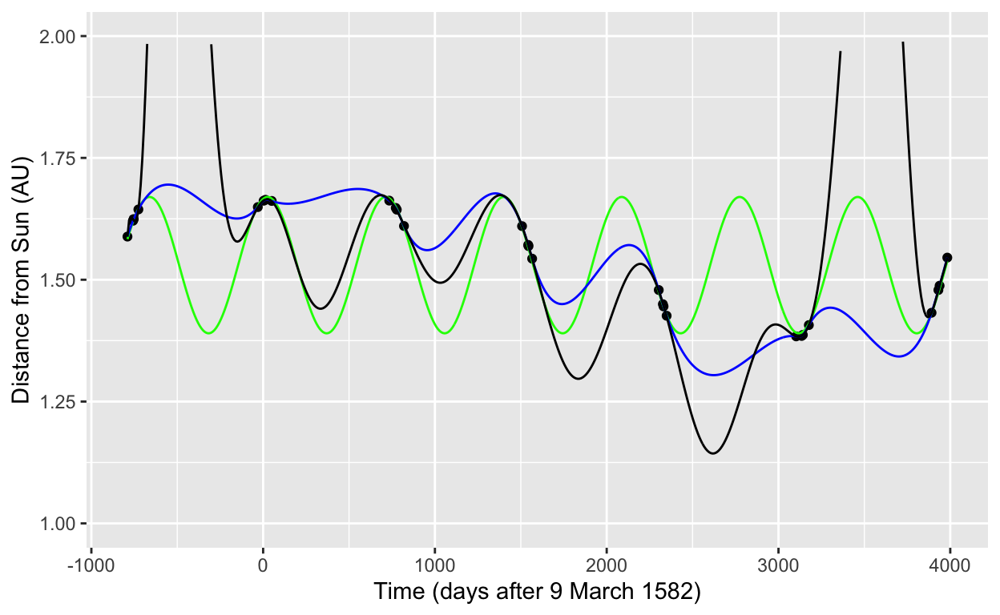
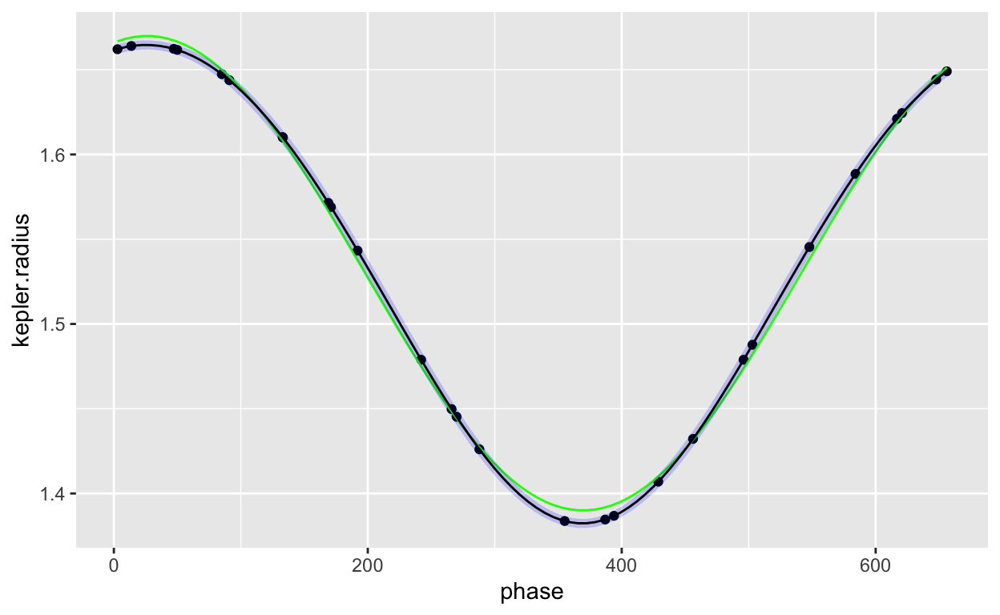

For a function \(f(x)\) and its derivatives \(f^{(1)}(x)\), \(f^{(2)}(x)\), … the Taylor polynomial \(p(x)\) centered on \(x_0\) is
\[p(x) \equiv f(x_0) + \frac{f^{(1)}(x_0)}{1!} (x - x_0)^1 + \frac{f^{(2)}(x_0)}{2!} (x - x_0)^2 + \cdots\]
A Taylor polynomial, like all polynomials, is a linear combination of basic functions.
As you recall, the Taylor polynomial for \(e^x\) has an especially lovely formula: \[p(x) = 1 + \frac{x}{1!} + \frac{x^2}{2!} + \cdots\]
Consider this Taylor polynomial: \[p(x) = e + \frac{e}{1!} (x-1) + \frac{e}{2!} (x-1)^2 + \cdots\] A neophyte instructor is convinced that \(p(x)\) is a Taylor expansion of \(e^x\).
Consider the function \(f(x) \equiv (x - 3)^2\).
Here’s the Taylor polynomial expansion of \(\sin(x)\) about a center \(x_0\): \[p(x) = 1/2 - \frac{\sqrt{3}/{2}}{2!} (x - x_0)^2 + \frac{1/2}{4!} (x - x_0)^4 + \cdots\]
Mathematicians quantify the “smoothness” of a function by looking at the continuity of the function and its derivatives. For engineering and design problems, smoothness means something substantially different. This section is about the differences and similarities of the two notions of smoothness.
The mathematical definition of smoothness is straightforward and phrased in terms of derivatives. Suppose you are examining the smoothness of a function \(f(x)\). The smoothness is assessed on a scale \(C^0, C^1, C^2, \ldots, C^\infty\).
Examples of \(C^\infty\) functions:
\(\sin(x)\): the derivatives are \(\partial_x \sin(x) = \cos(x)\), \(\partial_{xx} \sin(x) = -\sin(x)\), \(\partial_{xxx} \sin(x) =-\cos(x)\), \(\partial_{xxxx} \sin(x) =\sin(x)\), … You can keep going infinitely.
\(e^x\): the derivatives are \(\partial_x e^x = e^x\), \(\partial_{xx} e^x = e^x\), and so on.
\(x^2\): the derivatives are \(\partial_x x^2 = 2 x\), \(\partial_{xx} x^2 = 2\), \(\partial_{xxx} x^2 = 0\), … Higher order derivatives are all simply 0. Boring, but still existing.
Example of non-\(C^2\) functions: We see these often when we take two or more different \(C^\infty\) functions and split their domain, using one function for one subdomain and the other(s) for other subdomain(s).
\(|x|\), the absolute value function. \(|x|\) is a pasting together of two \(C^\infty\) functions: \[|x| \equiv \left\{\begin{array}{rcl}+x & \mbox{for} & 0 \leq x\\-x&\mbox{for}& x \leq 0\end{array} \right.\] The domain is split at \(x=0\).
Cubic splines. The domain is split at each of the knot points. Between any two adjacent knot points, the function is an ordinary cubic polynomial. At the boundary between domains, the cubics on either side have been arranged to have their first and second derivatives match. Thus, the first two derivatives are continuous. The function is at least \(C^2\). The second derivative of a cubic is a straight-line function, so the second derivative of a cubic spline is a series of straight-line functions connected at the knot points. The second derivative does not itself have a derivative at the knot points. So, a cubic spline cannot satisfy the requirements for being \(C^3\); it is \(C^2\).
Consider the functions shown in the table, all of which involve a domain split at \(x=0\) and the pasting together of two individually \(C^\infty\) functions:
The dots in the graph below show Johannes Kepler’s calculated distance of Mars from the Sun using Tycho Brahe’s observational data.
Three interpolating functions are drawn through the data points:

Just for interest: The observations are in small clusters of points separated by large gaps. This is because in order to make an observation, Mars had to be visible from Earth on at least two occasions separated by the orbital period of Mars: 687 days. There were no observations when Mars wasn’t visible from Tycho Brahe’s observatory in Denmark, as happens whenever the line segment between Earth and Mars passes near the Sun.
The sinusoidal oscillation in the orbital radius of Mars reflects the eccentricy of the orbit; it is an ellipse rather than a circle. Neither the cubic spline nor the global polynomial do a creditable job tracking the actual orbit of Mars. That’s because neither method has a way to “discover” that the data are periodic, which is a huge hint about the sorts of functions that are appropriate.
Now, a trick. We’re going to compute for each time a phase of that time in the 687 day orbit. This will collapse all the data down to the interval \(0 \leq t < 687\). Here’s a plot of the data and the interpolating functions.

With the data spaced more evenly over the orbital cycle, both the cubic spline and the polynomial provide a smooth match to the data, while the sinusoid shows systematic deviations.
Location: CalcZ/_DailyDigitals/DailyDocuments/inst/DD-142Z-31/142Z-DD-31.Rmd DD-142Z-24